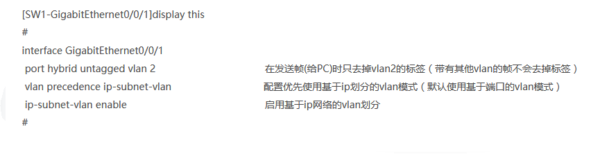
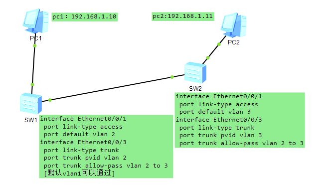

交换机常用命令收集 (更新|14:50 2023-02-27)
【返回首页】 交换机配置.doc[点击下载]基础命令【交换机路由器】
System-viem 切换[系统视图]
quit [exit] 命令返回上个视图
save 保存配置，如果重启当前配置就还
undo 加命令，no掉该命令
info-center loghost timestamp none 即可关闭时间戳
查看IP路由表 display ip routing-table
查看转发表MAC地址 display mac-address
关闭日志滚屏 undo info-cenrer renable
syname 改主机名
display history-command 查看历史命令
display version 查看vrp版本
disply users 查看终端用户信息
查看端口在线状态 display interface brief
更改端口速率 speed 10/100/1000
disply this 显示当前视图做过的配置 如接口IP等等
displan current-configuration 查看当前路由配置 类似思考 的 show run
配置文件管理
display saved-configuration 查看已保存的配置
reset saved-configuration 擦拭存储设备的中的配置文件
compare configuration 比较配置文件
配置ip地址 【路由器】
进入接口 interface g 0/0/0 那个g或e是接口型号 0/0/0 是接口号
配置 ip ipaddress 192.168.1.254 255.255.255.0
undo shutdown 打开接口
配置Web网管用户名为admin，认证口令为admin，用户级别为3级
[Sysname] local-user admin
[Sysname-luser-admin] service-type web
[Sysname-luser-admin] authorization-attribute level 3
[Sysname-luser-admin] password simple admin
配置console 接口登陆认证方式
配置认证方式和超时时间
[R1]user-interface console 0
[R1-ui-console0]authentication-mode password
Please configure the login password (maximum length 16):huawei
[R1-ui-console0]idle-timeout 10
[R1-ui-console0]display this
配置telnet 路由器
user-interface vty 0 4 进入[用户试图] 0 4 表示最多允许5个用户同时登陆
Authentication-mode passwrd 选择验证模式为password
Set authentication password simper 123 配置验证时需要的密码 为 123 simper明文方式 cipher密文 有些路由器不支持明文
User privilege level 3 设置用户级别 0 为参观级别 1 为监控 2 为配置 3-15 为管理级别
配置交换机VLAN
1、基于端口的vlan划分，这个就是普通的使用access模式做的，一般都用这个模式
2、基于ip地址的vlan划分，这个是用hybrid模式做，用于主机移动的办公环境（比如公司经常部门调整地理位置），原理是将vlan-id与ip网段进行映射绑定，只要主机的ip网段不变，那么他不管连接那个sw的那个接口都属于同一个vlan，不用担心频繁换地区导致连接sw的端口需要进行vlan的调整
vlan 2
ip-subnet-vlan 2 ip 192.168.1.0 255.255.255.0 将192.168.1.0/24与vlan2绑定，红色的数字2是id号，不是vlan号，可以随意,但是一个vlan中最多可以绑定最多12个子网网段，只有12个id号

配置VLANIF 接口的IP 地址[vlan:是物理端口,vlanif：是逻辑端口]
【那么在配置玩vlan之后还需要配置vlanif接口IP地址；以便于telnet管理或者是用于作为vlan的网关地址】
step1 执行命令system-view，进入系统视图。
step2 执行命令interface vlanif 1，创建VLANIF 接口并进入VLANIF 接口视图。
step3 执行命令ip address ip-address { mask | mask-length } [ sub ]，配置VLANIF 接口的IP 地 址。
display interface vlanif，可以查看VLANIF 接口的IP 地址是否配置正确
VLAN添加端口
vlan 140 进入140号vlan
添加端口 port GigabitEthernet 0/0/40 to 0/0/42
//单端口加入vlan
[输入interface e0/0/1,进入端口1
port link-type access ,设置端口1为access类型
port default vlan 2,把端口1加入VLAN2]
查看vlan信息 dis vlan
华为交换机端口模式
华为交换机端口分为三种模式：access、trunk、hybird
1、access端口，用于连接主机，pvid就是该端口所属的vlan号，只能属于一个vlan
2、trunk端口，用于交换机之间连接，默认pvid是vlan1，不属于任何vlan
3、hybird端口，是一种特殊的端口类型，默认pvid是vlan1，不属于任何vlan，是交换机端口的默认模式
端口之Pvid的特性
pvid的作用，分为端口接收和发送数据两个方向：
1、当端口收到一个未标记的帧时，就把该帧打上vlan id，这个id值等于pvid的值，然后转发到VID和PVID相等的VLAN 中。
2、当帧从端口向外发送出去时，如果帧头中的VID和端口的PVID值相同，就把这个标识去掉，再送出去。
个人理解：加上trunk pvid 指定pvid号，交换机就会接收时去掉vlan标识，然后再加上标识，比如上面：交换机sw2接收时会将包中pvid=2去掉，转发时加上pvid=3的标识，所以pc1和pc2他们能通信

[此处完结]